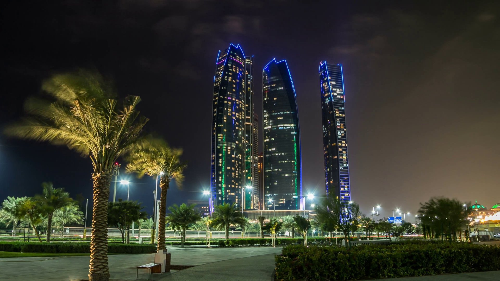
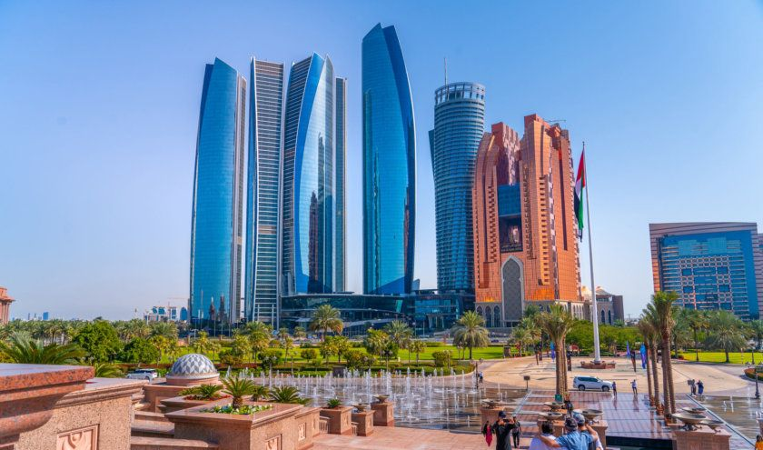

Elle est le centre politique et industriel de la fédération, et un centre culturel et commercial important dans le golfe Persique, du fait de sa position de capitale. Elle nous surprend de part ses contrastes saisissants. Les étendues de dunes ensablées et infinies tranchent avec l’ambition des projets culturels réalisés.
Vous y trouvez entre autres le Musée du Louvre, le Guggenheim, ainsi que la fameuse mosquée Sheikh Zayed, soit l’une des plus grandes du monde. Vous l’aurez compris, culture et luxure sont les maîtres-mots de cette destination du Golfe Persique. Que ce soit lors d’un court séjour ou d’un circuit itinérant, Abu Dhabi demeure une étape incontournable d’un voyage en Orient.
